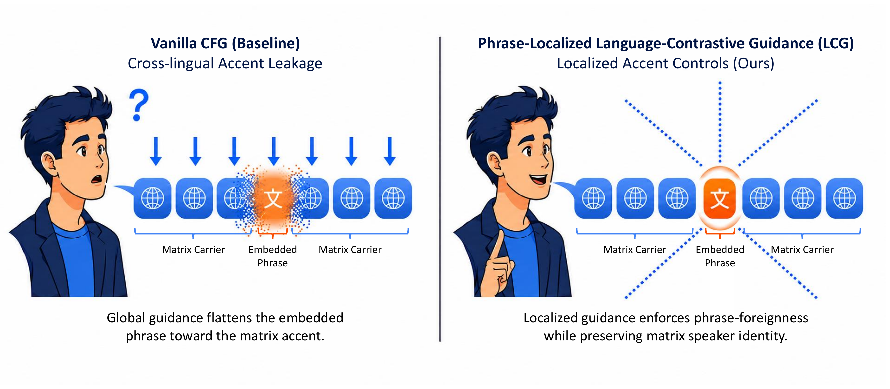
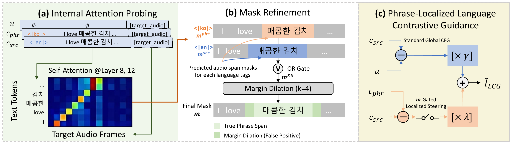

EMNLP 2026 · Main Conference
Code, the 1,200-utterance synthetic code-switching benchmark, and reproduction instructions are available at github.com/saga1214/PhraseLocalizedLCG.
⏱ Hear the difference in 10 seconds — cafe pickup call (EN→KO)
| Vanilla | the phrase comes out as English-accented "Jumunhashin..." | |
| Ours — LCG | the same phrase, spoken like a native Korean barista |
Global guidance flattens the embedded phrase into the carrier accent (left); LCG steers only the phrase region toward its own language (right).


Everyday situations where a carrier sentence embeds a foreign phrase. Vanilla vs. our phrase-localized LCG (λ=7), paper-final configuration.
The last tab embeds French and German phrases in English carriers — the training-free control covers all five languages of the paper.
Cafe pickup call EN→KO
| Vanilla | |
| Ours λ7 |
Restaurant service phrase EN→JA
| Vanilla | |
| Ours λ7 |
Restaurant menu EN→JA
| Vanilla | |
| Ours λ7 |
After a meal EN→JA
| Vanilla | |
| Ours λ7 |
Shop greeting EN→KO
| Vanilla | |
| Ours λ7 |
Samples drawn directly from our released 1,200-utterance synthetic code-switching benchmark, comparing all three systems from the paper (unguided baseline, coupled Swap, and phrase-localized LCG).
Korean carrier sentences with embedded English phrases, drawn from the LA=1 subset: all systems synthesize the correct words, so the difference you hear is residual accent quality on the isolated segment.
Example 1 — “practical workshops aligned with our buying committee” KO→EN
| Vanilla | |
| Swap λ3 | |
| Ours λ7 |
Example 2 — “lean household operations with zero emotional overhead” KO→EN
| Vanilla | |
| Swap λ3 | |
| Ours λ7 |
Complete utterances with three embedded phrases each, comparing global naturalness and phrase nativeness.
English carrier · Japanese phrases EN→JA
| Vanilla | |
| Swap λ3 | |
| Ours λ7 |
English carrier · Korean phrases EN→KO
| Vanilla | |
| Swap λ3 | |
| Ours λ7 |
All audio above is synthesized from our 1,200-utterance balanced synthetic code-switching benchmark, generated with a large language model and spanning five languages across twelve directional configurations. The corpus is released with the code and documented in benchmark/.
Each utterance contains 3–5 dense, technical or literary embedded phrases (~6 words, ~35 characters per phrase). The corpus is balanced by direction (100 utterances per direction) to enable per-direction evaluation.
@misc{lee2026phraselocalizedlanguagecontrastiveguidancetrainingfree,
title = {Phrase-Localized Language-Contrastive Guidance: Training-Free Localized Accent Control for Code-Switching Text-to-Speech},
author = {Che Hyun Lee and Sangkwon Park and Donghun Kang and Dongwook Lee and Youngho Cho and Heeseung Kim and Sungroh Yoon},
year = {2026},
eprint = {2609.01016},
archivePrefix = {arXiv},
primaryClass = {cs.CL},
url = {https://arxiv.org/abs/2609.01016},
}